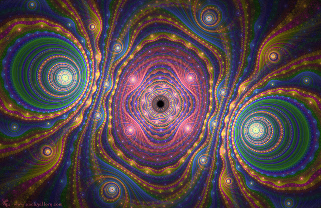

32 Бархайский мёд
- Ну а теперь пришло время наконец-то вернуться к твоему июльскому вопросу: ты спрашивала, сможешь ли ты сохранить сознание и память, когда придет время оставить физическое тело. Мы тебе сказали: ты уже в нашем мире, с нами и останешься. Но по правилам игры ты не можешь верить нам на слово. А может, это и не так? Это знание надо заслужить своим трудом, а не получить на блюдечке. Предлагаем тебе самой найти ответ на этот вопрос.
- А как?
- У тебя есть идеи?
Я набросала пару-тройку идей, которые при внимательном рассмотрении оказались несостоятельными, поскольку могли доказать лишь наличие коллективного разума, не более.
- Давай поступим так: мы проведём тебя через ряд испытаний, в результате которых ты сможешь найти ответ. А поскольку мы симбиоты, то пусть они будут полезны и тебе и нам.
- Конечно же.
Мысль о том, что я сама могу быть паразитом для моих любимых существ меня пугала.
- А раз мы симбионты, внедрились к тебе... то и ты внедряйся в нас. Хочешь?
- Конечно хочу! Это же так интересно... узнать, что же там, внутри. И не просто узнать... А принести пользу. Может, и я смогу вам чем-то помочь, как вы мне помогли - выдернуть сорняки, вылечить больной участок. Проследить, нет ли вредоносного внедрения. Ведь мы же все обязаны это делать! Может, мне и рано этим заниматься, но мне кажется, что пора ничинать учиться.
Подспудно крутилась мысль, не оформившаяся в слова: ну хоть так-то я их, наконец-то убежу, чтобы и они меня пустили внутрь тех, кто рядом в нашем мире.
- Вот об этом и речь. Пора и тебе внедряться! Почему только мы с тобой проживаем твою жизнь? И ты проживай нашу.
Слишком хорошо звучит... я уже понимала, что всё так просто быть не может. Зная этих существ, я сообразила, что здесь кроется подвох. Правда, теперь я уже не относилась к их подвохам как раньше - не злилась и не отчаивалась: вероятно, это делается, чтобы провести какой-то этап обучения, и даже если будет страшно - нужно перебороть свой страх и получить ценный опыт.
В ту ночь я видела сон, в котором они промывали мне глаза.
- Это бархайский мед. Он вреден в определенной мере, но зато даёт прекрасный результат. Не беспокойся, с тобой ничего не случится.
Сначала в глазах потемнело, потом зрение резко улучшилось. Я смогла рассмотреть даже мельчайшие предметы в отдалении.
По ночам меня учили строить правильные фразы, мы вместе создавали локации, в которых можно находиться физически. Эти локации могли быть настолько чёткие как мой дневной мир. Чаще всего это были комнаты, которые проще всего удержать сознанием. Мне посылали часть сцены - я её достраивала. Наш диалог вышел за рамки обычных слов. Хотя и диалогом сплетение наших мыслей назвать можно было только с натяжкой. Теперь я задействовала всё, что у меня было - визуализацию, тактильные ощущения, вкусы и запахи. Я больше не видела тех снов, что раньше. Теперь все наши сны были совместными. Иногда ставили сцену "на паузу", меня будили, чтобы обсудить некоторые детали, "перематывали назад", затем я засыпала и продолжали с того же места. А может - не засыпала. Сказали, что изменили что-то в ретикулярной формации и теперь у меня нет четкой грани между сном и пробуждением. Тем не менее, иногда специально показывали сны-фильмы и в них были фрагменты, которые я не понимала. Как объяснили - пока это информация к размышлению. Поймешь позже. В ряде случаев так и получалось: некоторые вещи уже прояснились.
За несколько дней до этого мне снился сон, где меня они же принимали у меня экзамен. Я пришла уверенная в себе, но как потом как оказалось, была абсолютно не готова. В тот день я совершенно не поняла, зачем мне показали эту сцену.
Когда закончили умывать меня, вытерли лицо полотенцем и вывели из ванной. Сцена сменилась. На несколько секунд передо мной возникло лицо Иисуса, который спокойно глядел на меня. Но не как на иконе, а по-доброму тепло улыбаясь. При этом глаза его были странные, словно он смотрел куда-то сквозь меня.
Зачем мне его показали? Это был один из тех моментов, который намеренно не стали объяснять. Может, до сих пор "мстят" (шучу), за то, что я поверила словам Эдика насчет того, что это они довели пророка до такой жизни. (И часовню тоже мы развалили. И метеорит на динозавров сбросили - тоже мы...)
- А теперь, пойдем в соседнюю комнату, - позвали меня.
Я вышла из своей комнаты и вошла в другую... и там начался кошмар.
Там находилась умирающая женщина
- Сможешь провести её через это? Умереть вместо неё? Облегчить её участь, взять на себя часть её боли, при этом получить то знание, которое ты так ищешь. Ты ведь хочешь узнать, что происходит в процессе смерти физического тела, увидеть, что на этом всё не кончается и сознание остается живо.
Оба-на! Вот он - подвох! И вопрос мой вспомнили не просто так...
- Давай мы попробуем тебя внедрить. Облегчи ей задачу и пройди весь путь с ней. Помнишь, как тебе в мае было тяжело, когда ты попала в центрифугу и чувствовала, что сознание вот-вот расколется из-за внутренних противоречий. Тогда ты оставила свою память в нас, прошла без памяти, а потом мы тебе её вернули. Попробуй повторить.
Меня начали внедрять: я проживала всё "с изнанки", не видя саму женщину. Я начала понимать, почему они говорили раньше - "наши глаза направлены внутрь". Вероятно, если бы меня внедрили глубже, я смогла бы посмотреть на мир её глазами. Но у меня возник такой страх, когда я ощутила её состояние, что выкинуло почти немедленно.
Я лежала в своей постели, чувствуя уже в своём теле те же симптомы, что и она. Я безумно испугалась того, что могла "вынести с собой" её состояние, спроецировать на себя. Ощущала тот же невероятный страх близкой смерти. Постаралась как можно быстрее взять себя в руки, чтобы не паниковать. И тем не менее, поначалу растерялась - состояние все ухудшалось.
- Пожалуйста, помогите мне! - воскликнула я
- Где мы? - спросили существа
- Помогите!
- Где мы?
Чувствовала я себя ужасно. Особенно страшно то, что я ничего не могла сделать. Я ходила по краю.
- Там где кредо жизни! Там где наша мера, где здоровье нашего организма.
При этом я вызывала в своём сознании соответствующие мыслеобразы.
- На участке, ограниченном моим осознанием, наше кредо будет исполняться! Я за это отвечаю!
А про себя думала: какой из меня иерарх, я скорее - шериф Ранго, самозванец... но раз уж влипла и начала хвастать, что могу "прикончить семерых одной пулей", надо доказывать свою состоятельность. Куда деваться, жить-то хочется, надо выкручиваться из ситуации!
Я сконцентрировалась на участке организма, которому надо помочь и послала туда свет и любовь. Несмотря на страх, я пыталась удерживать внимание. Тем не менее, все же поначалу я растерялась и ничего не смогла сделать для той женщины.
Все симптомы исчезли как "по щелчку". Я вздохнула с облегчением. Всё в порядке - никакой болезни не было. Это было наведенное состояние.
- В общем, экзамен я провалила.
- Это естественно. Ты не могла это выполнить с первого раза. В таких случаях тяжело даже гораздо более опытным существам. Ты сама сначала перепугалась, твоё сознание начало метаться, хотя ты уже знала о нас. А представь, как тяжело тем, кто не знает, как к нам обратиться, где нас искать.
- Я не смогла ничего сделать... ей кто-то помогает?
- Конечно. Там - те, кто может это выполнять. Но им очень тяжело оттого, что она не знает, где они и не может им открыться, чтобы они её провели по этому пути. Тем кто защищает, охраняет живое, очень трудно работать, когда в них не верят или когда их ищут не там. Или когда их отталкивают, отворачиваются от них. А это сделать легко - достаточно лишь отвернуться от настоящего себя, предать себя, пойти на поводу у чьего-то мнения. Позволять себе впадать в уныние или депрессию, не верить в себя, разрушать свой организм, жить не в согласии с собой. Тем, кто внедряется, чтобы вытянуть людей из этого состояния, самим бывает очень страшно оттого, что люди проделывают над ними и над собой.
- Понимаю.
В этот момент я сообразила, что, может, и не было никакой женщины.
- А не всё ли равно? В твоём случае это не играет роли. Ты сейчас прошла один из этапов обучения.
- Согласна.
- Помнишь, что ты нам говорила летом: вы не туда меня ведете! Зачем мне чувствовать других существ, узнавать чужую боль? Я всего лишь хочу попасть на другую планету.
- Помню.
- Ты спрашивала нас: зачем я буду кому-то помогать? Зачем мне этим заниматься? Мало ли, как в мире все устроено? Может, каждый должен сам помучиться?
- Я получила ответ на свой вопрос...
Сегодня, когда я побывала в шкуре другого живого существа, у меня не осталось сомнений, ради чего помогать, если можешь помочь. Еще несколько минут назад в критическом состоянии я больше всего желала, чтобы мне самой кто угодно помог и не оставил.
Я отдаю себе отчёт, что я влезла в этот эксперимент не ради помощи другим, а чтобы доказать на опыте, что сознания бессмертны. Но, чувствуя то, что чувствуют другие, невольно всё переосмысливаешь, научаешься сочувствовать... Сегодня я в буквальном смысле оказалась на её месте!
- Думаете, я изменюсь в лучшую сторону? Как была я эгоисткой, так и останусь.
- Ты нас вполне устраиваешь именно такая. Просто теперь ты не сможешь не помочь в похожей ситуации. Мы обещали - мы не будем тебя ничего заставлять делать. Мы сделаем так, что ты будешь добровольно работать на мафию. Ты такая, какая ты есть. В данном случае, важно, что у тебя есть стимул. Мы в свою очередь будем дальше работать над твоим сознанием.
- По рукам.
- А насчет эгоизма - сделай парадоксальную вещь: вместо того, чтобы бороться с ним, расширь своё эго, чтобы внутрь него попали мы все. Затем мелочиться? Если уж эго - то космического масштаба. Скажи, что всё в нашем мире принадлежит тебе. Ведь так и есть - мы части одного организма. И тогда ты будешь заботиться о нас, как о себе любимой. А что касается нашего дела... кто, если не мы? Почему это надо перекладывать на чужие плечи? Скажи, кто им ещё поможет, если никто не захочет этим заниматься?
... когда люди сотрудничают, когда поворачиваются к жизни, здоровью, любви, добру, гораздо легче помочь. Очень страшно внедряться в тех, кто ищет не там, предаёт кредо жизни ради сиюминутных интересов, становится паразитом этому миру. Внедрившись, есть риск самому завязнуть, поскольку все решения с человеком принимаются в согласии.
Это - мои мысли?
А может, эту фразу произнесли мы вместе? Странная вещь, сплетение мыслей... где твои, где мои - часто не различишь.. но все - наши.
- А что если я внедрюсь, а человек призовёт внедриться в него какую-нибудь злую сущность, которая может причинить вред и мне? Мне что, с ней воевать придется?
Я испугалась.
Мне не ответили. Но мне показалась, что я ощутила ответ: в таких нам внедряться сложнее... это готовы выполнить далеко не все. Некоторые внедряются и жертвуют собой... да, есть и такие. Страшно внедряться, когда до конца не понятно, чем кончится внедрение. Как же мало и одновременно много зависит от людей!
- Надеюсь, со мной у вас не было таких страхов.
- За тебя нам пришлось повоевать. Но с тобой было проще: мы нашли тот путь, который пришелся по душе нам всем. Среди нас нашлись те, кто пожелал внедриться именно так и ты приняла нас и впустила.
Я ощутила тепло...
- Кстати, почему вы всякий раз спрашивали у меня разрешение? Вы не могли выполнять перехваты и другие действия без моего согласия?
- Летом ты вспомнила старую сказку о том, что вампир не может войти в чужой дом. Он стоит на пороге и просит, чтобы его впустили. Ты же считала нас вурдалаками - как мы могли не воспользоваться этой находкой?
- А если бы я не вспомнила об этом?
- Мы бы нашли иной путь. В этой мысли есть здравое зерно и не только, когда дело касается вампиров. Хотя, правильнее было бы сказать так: ты не должна была впускать нас - ты должна была выпустить себя к нам навстречу.
Мне вспомнилась фраза Руми:
"Я жил на грани безумия, желая познать причины, стучал в дверь. Она открылась. Я стучал изнутри!"